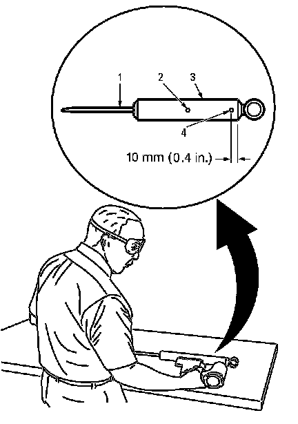

Shock Absorber Disposal
Shock Absorber Disposal
Caution: Gas charged shock absorbers contain high pressure gas. Do not remove the snap ring from inside the top of the tube. If the snap ring is removed, the contents of the shock absorber will come out with extreme force which may result in personal injury.
Caution: To prevent personal injury, wear safety glasses when centerpunching and drilling the shock absorber. Use care not to puncture the shock absorber tube with the centerpunch.

1. Make an indentation 10 mm (0.4 in) from the bottom (4) of the tube (3) using a centerpunch.
2. Clamp the shock absorber in a vise horizontally with the shock absorber rod (1) completely extended.
3. Drill a hole in the shock absorber at the centerpunch (4) using a 5 mm (3/16 in) drill bit. Gas or a gas/oil mixture will exhaust when the drill bit penetrates the shock absorber. Use shop towels in order to contain the escaping oil.
4. Make an indentation in the middle (2) of the tube (3) with a centerpunch.
5. Drill a second hole in the shock absorber at the centerpunch (2) using a 5 mm (3/16 in) drill bit. Oil will exhaust when the drill bit penetrates the shock absorber. Use shop towels in order to contain the escaping oil.
6. Remove the shock absorber from the vise. Hold the shock absorber over a drain pan horizontally with the holes down. Move the rod (1) in and out of the tube (3) to completely drain the oil from the shock absorber.